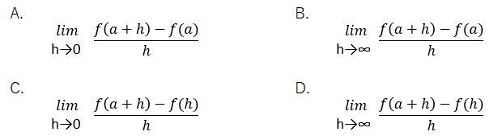
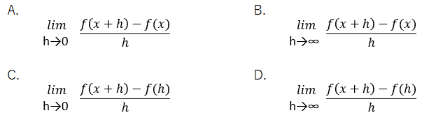
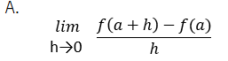
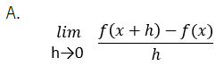

1.次の文章を読み、空欄に最もよくあてはまる選択肢をそれぞれ1つずつ選べ。
関数y=f(x)のx=aにおける（ア）f'(a)は（イ）と定義される。
また、（ウ）のように定義される関数f'(x)を、y=f(x)の導関数と呼び、
導関数を求めることを微分するという。
| ア | A. 導関数 B. 微分係数 C. 接係数 D. 微分関数 |
| イ |

|
| ウ |

|
答え Ｂ、Ａ、Ａ
【解説】
| ア | 関数y=f(x)の接線をx=aにおいて引き、その傾きをy=f(x)のx=aにおける微分係数と呼び、f'(a)と表します（ア＝Ｂ）。 |
| イ | 微分係数f'(a)は次のような数式で定義されます。 【微分係数の定義】

|
| ウ | aを変数xに置き換えた関数f'(x)をf(x)の導関数と呼び、それを求めることを「f(x)を微分する」といいます（ウ＝Ａ）。

|
 戻る
戻る 一覧へ
一覧へ 次へ
次へ